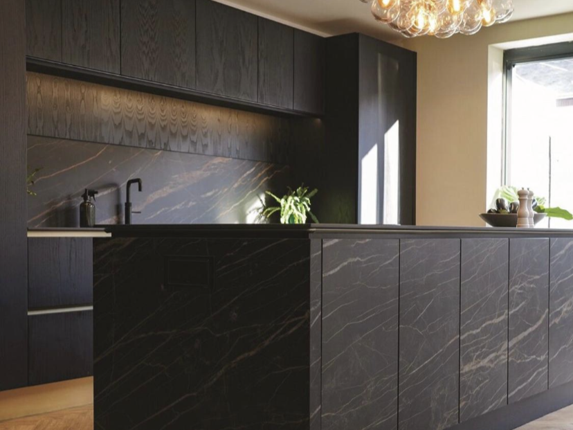
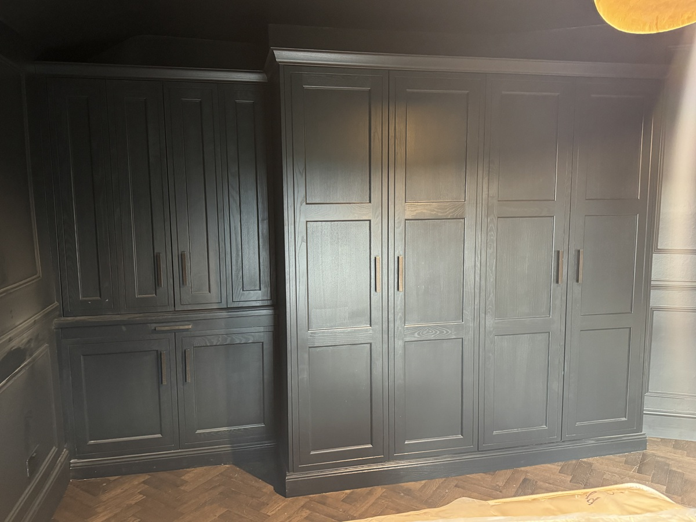
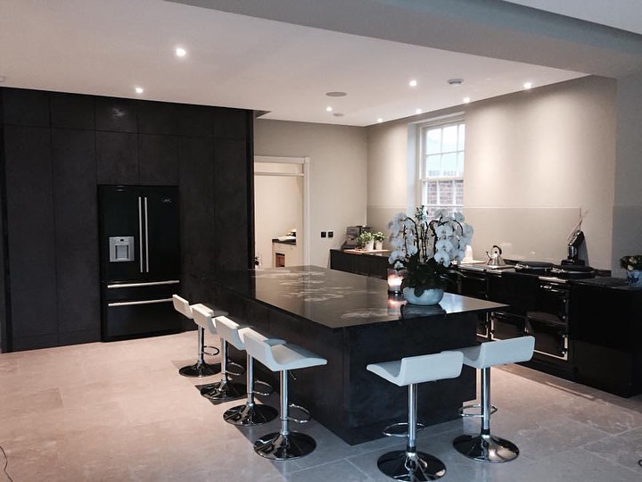

Kitchens
Explore bespoke kitchen projects crafted in a range of styles, materials, and finishes.

Media Wall Display Unit
A bespoke living room installation combining integrated LED-lit glass cabinetry, fireplace, and media wall — finished in matte black for a bold, contemporary focal point.

Hidden Wine Cellar
A discreet under-stair wine feature crafted in anthracite and walnut with angled shelving and soft LED lighting.

Gloss White Kitchen
A sleek handleless kitchen finished in high-gloss white with black glass splashbacks and waterfall quartz island — pairing clean lines with everyday function.

Classic Shaker Kitchen
A timeless shaker-style kitchen with soft sage cabinetry, solid oak worktops, and exposed brick backsplash — blending rural charm with enduring craftsmanship.

Light Grey Handleless Kitchen
A modern handleless kitchen in light grey with gloss backsplash, built-in ovens, and waterfall island — designed for seamless everyday living with crisp, contemporary lines.

Light Grey Handleless Kitchen
A modern handleless kitchen in light grey with gloss backsplash, built-in ovens, and waterfall island — designed for seamless everyday living with crisp, contemporary lines.

Porcelain Kitchen
A refined contemporary kitchen featuring large-format porcelain fronts and matching worktops. Warm wood flooring and soft lighting bring balance to the clean, sculptural design.

Dark Shaker Wardrobe
A built-in shaker wardrobe finished in charcoal oak with solid panelled doors and antique bronze handles — blending period detailing with bold, masculine tones.

Home Bar Cabinetry
A tailored home bar setup featuring built-in bottle racks, glass-fronted chillers, and shaker cabinetry with open displays — finished in slate grey with under-lighting and exposed brick backdrop.

Dark Porcelain Kitchen
A bold handleless kitchen in dark porcelain with matching splashback and seamless tall units. The large island with integrated breakfast bar anchors this minimalist, modern space.